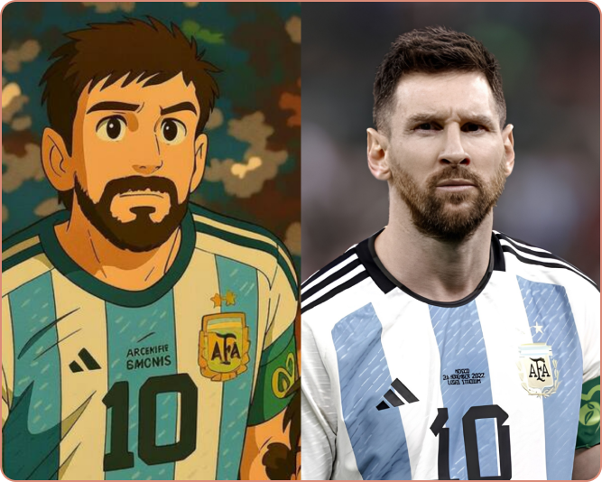

Efecto Ghibli de ChatGPT
Conocé el impacto que generó esta tecnología al replicar masivamente la identidad visual de, entre otros econocidos estudios de animación, el Studio Ghibli.

Conocé el impacto que generó esta tecnología al replicar masivamente la identidad visual de, entre otros econocidos estudios de animación, el Studio Ghibli.
